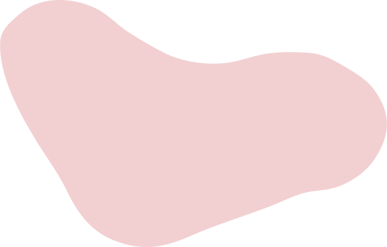
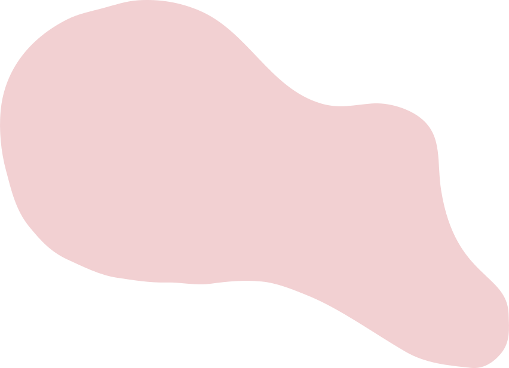
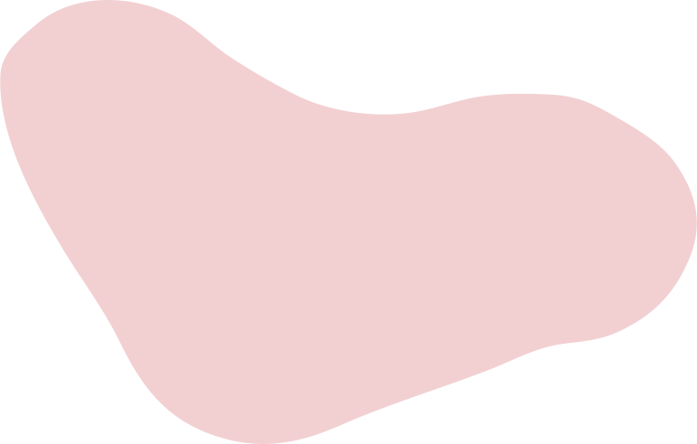
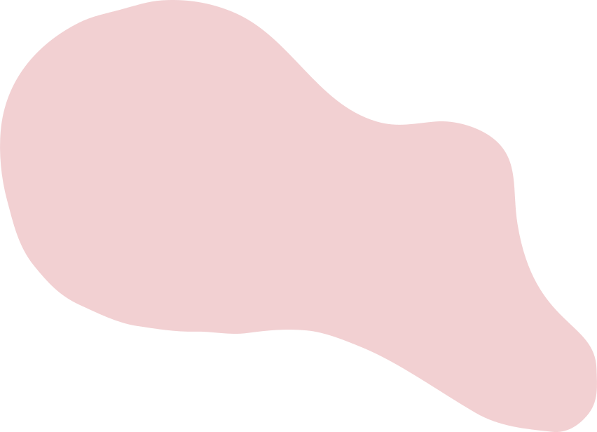

Adopción Responsable


 



Quienes somos?
Somos una red social mexicana enfocada en la gestión de procesos de adopción responsables y accesibles para cualquier persona que quiera darle un hogar a un perrito o gatito en situacion de calle.
Misión y Visión
Buscamos crear un espacio virtual donde las personas puedan encontrar información, detallada y precisa, sobre animales en rescate disponibles para adopción. Reduciendo la población de mascotas abandonadas o en situación de calle
Deseamos ser una plataforma líder en adopciones de mascotas, ofreciendo no solo un proceso fácil de adopción y transparente, sino también en educación continua sobre la responsabilidad de tener una mascota.
Conoce a nuestro equipo